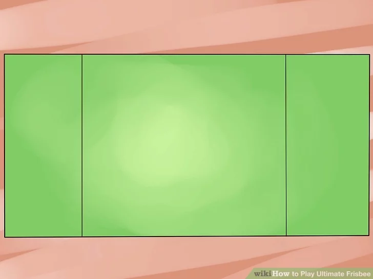
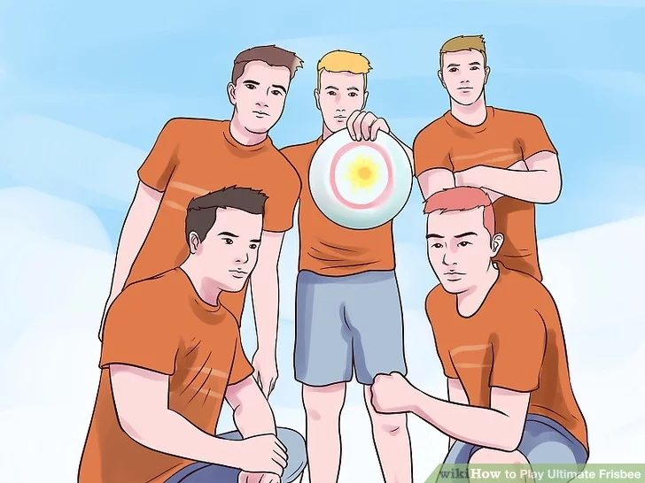
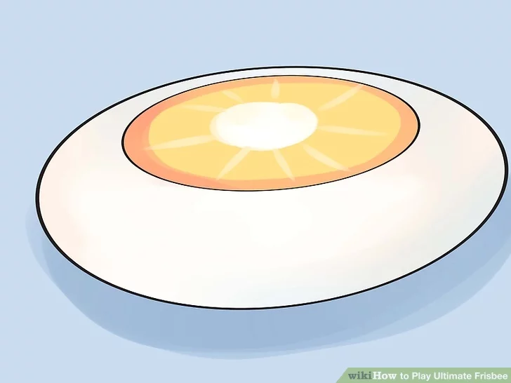
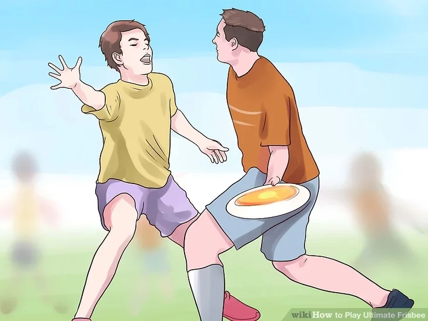
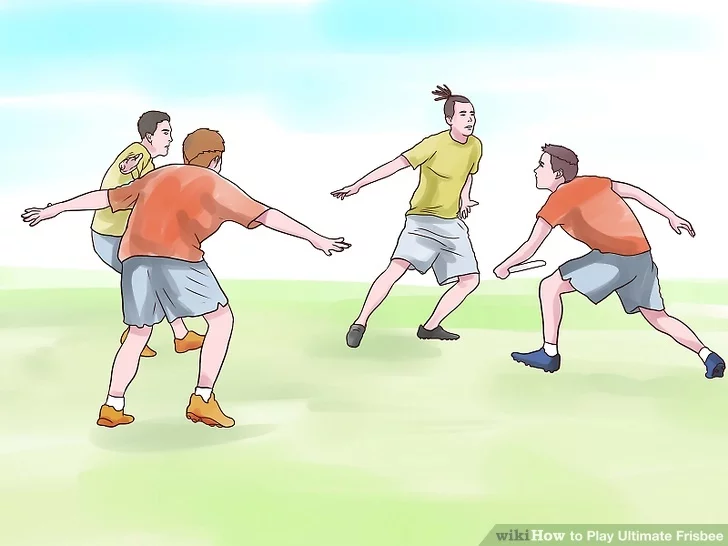

Ultimate Frisbee combines all the best elements of American football, soccer, basketball, and everyone's favorite beach sport: tossing a Frisbee disc. But there's nothing leisurely about Ultimate. Intense, fast-paced, and strategic, a good game of Ultimate Frisbee is like nothing else. If you want to learn to play, you can get a simple overview of the easy rules, learn to get a game going, and how to strategize to give your team the best chance of winning.
Download Instructions
For Saving Instructions Offline Click The Button Below
1
Find a suitable playing field. To play ultimate Frisbee, you’ll need a bit of room to spread out.

Traditionally played on soccer or football fields, ultimate Frisbee can be played in any open field that’s at least 70 yards by 40 yards, with marked-off end zones at each end, where points are scored. In regulation Ultimate Frisbee, the end zones are 20 yards deep.
Work with the space you have. If you’re playing in a backyard, don’t worry about measuring it off. Just set up two end zones at each end of the yard to give each team a territory, then start playing.
2
Divide into two teams.

Ultimate Frisbee is a team sport that will require at least a handful of players on each side to play. Split up your group of friends into two evenly-divided teams.[1]
The absolute minimum of players would be four–two per team–but that would be a challenging game. It’s usually best with between five and seven players, per side.
Regulation Ultimate Frisbee teams have seven players on each side, though the roster can include as many players as you want. Players may be substituted any time after a point is scored.
3
Play with the correct kind of disc.

You can play Ultimate Frisbee with any kind of Frisbee, though it’s typically easier and more recommended to play with a slightly heavier version of the classic recreational disc. This makes controlling your passes and your distance a lot easier than with a basic beach Frisbee.
175 gram Frisbees are recommended for playing Ultimate Frisbee, which are widely available at sporting goods stores. The Discraft Ultra-Star 175 is the official playing disc for the USA Ultimate Championship Series.
4
Learn how play is advanced.

As in soccer, American football, lacrosse, or other goal-based sports, each team has one end zone that they’re defending and will attempt to score in their opponent’s end zone. The object of the game is to move the Frisbee down the field by completing passes to your teammates.[2]
The player in possession of the Frisbee may not move and must not hold the Frisbee for longer than 10 seconds. The rest of the players will move around the field and attempt to get open for a pass.
If a pass is dropped, goes out of bounds, or is intercepted, play is turned over to the defending team at the point of play.
Meanwhile, the team not in possession of the Frisbee will attempt to intercept the disc and otherwise disrupt the passes made by the team in possession.
5
Find a league in your area to learn more.

It can be hard to find enough people who know how to play informally, and get a regular game going. For this reason, the best way to learn the strategies, techniques, and enjoy playing Ultimate Frisbee is to find a league in your area in which you'll be able to learn the ropes and have fun making new friends. You can find pick-up games in your area here.